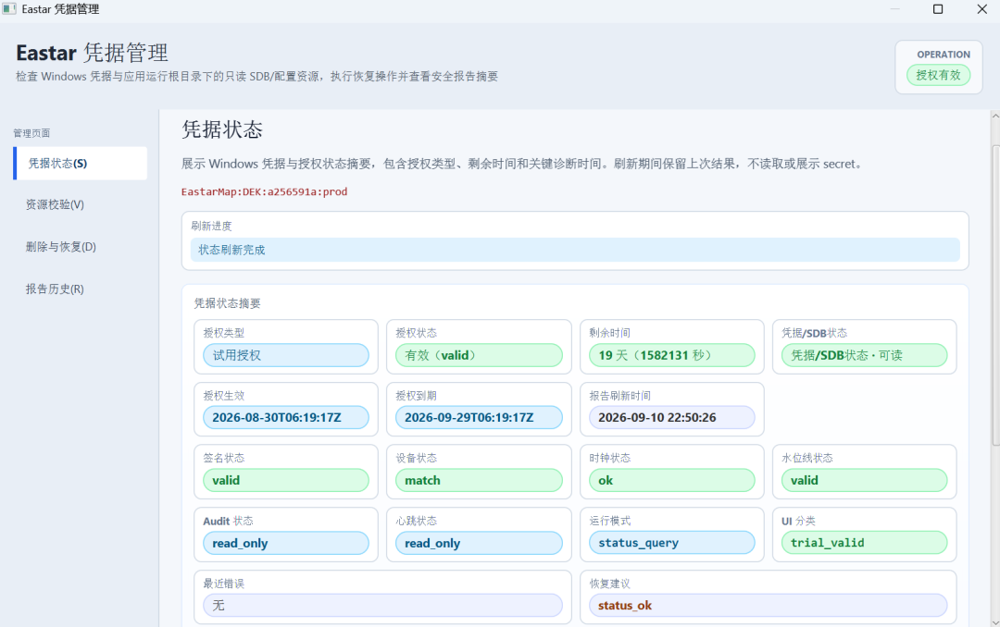

Docs
Chart Data Format Notes

Explains the differences between S-57, S-63, and S-101 chart data, plus licensing, updates, and what to confirm before integration.
The system uses vector chart data as the navigation base map. Different formats serve different purposes: some carry the data itself, some handle distribution and licensing, and others target the next generation data model. Confirming the format and licensing model before integration avoids rework in the update process later.
Format comparison
| Format | Role | Typical use |
|---|---|---|
| S-57 | IHO vector chart transfer standard | Base data content for electronic navigational charts |
| S-63 | Encryption and licensing wrapper for S-57 | Distribution of copyright-protected chart data |
| S-101 | Next generation ENC standard under S-100 | More flexible feature model and new feature types |

Licensing and updates
- S-63 data requires matching permits and cell permits. Check validity period and coverage before import.
- Update packages are released on a fixed cycle and can replace affected chart cells incrementally.
- Data version and license status are validated on import, with prompts for expired or unlicensed cells.

What to confirm before integration
- Confirm chart coverage and the waters in use, verifying that planned fairways and ports are included.
- Confirm data format and encryption, and clarify where permit files come from and who owns updates.
- Confirm the update cycle and method, then plan data directories, backup, and rollback.
Licensing models differ between data providers. Follow the documentation supplied with the data for the actual import procedure.
Continue Reading
东星海图 · Eastar Map
Stars above. Seas ahead.